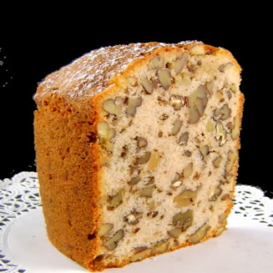

Nut Cake

Have you ever had a cake and thought "man, I just wish this cake had lots of nut in it?" Well my nut-hungry friend, look no further; this is the recipie for you. What you've stumbled upon is a state-of-the-art N U T BREAD unlike anything you've ever had the pleasure of experiencing.
Ingredients
- 1 pound toasted walnuts, broken in large pieces
- 1 pound toasted pecans, broken in large pieces
- 3-1/2 cups sifted all-purpose flour
- 2 teaspoons double acting baking powder
- 1/2 teaspoon mace
- 1/4 teaspoon salt
- 3/4 cup milk
- 1/2 cup brandy or bourbon, divided use
- 1 cup butter, room temperature
- 2 cups granulated sugar
- 6 large eggs
Preparation
- Move an oven rack to lower third of oven. Preheat oven to 325 degrees F. Butter a 10 x 4-inch tube pan. Line bottom with parchment paper. Butter paper and dust pan with fine dried bread crumbs. Set aside.
- Place walnuts and pecans into a very large mixing bowl or roasting pan.
- Combine flour, baking powder, mace and salt in another bowl. Whisk to combine.
- Combine milk and 1/4 cup brandy or bourbon in another bowl. Set aside.
- Cream butter in large bowl of an electric mixer. Add sugar and beat at moderate speed for two or three minutes. Add eggs, one at a time, beating each until incorporated. Increase speed and beat until light and fluffy./li>
- On low speed alternately add flour mixture in three additions and milk mixture in two, beating only until smooth after each addition. Pour batter over nuts and mix with your hands or a wooden spoon until nuts are coated with batter. Turn batter into prepared pan, smoothing top to even.
- Bake for 1-3/4 hours or until cake tester inserted in center of cake comes out clean. Transfer cake to a cooling rack. While cake is still hot brush top with reserved 1/4 cup brandy or bourbon. Let cake cool in pan for 20 minutes. Cover cake with a cooling rack and invert to remove paper. Invert again and cool in upright position. Let cake age for 24 hours before serving. Yield: 16 servings.